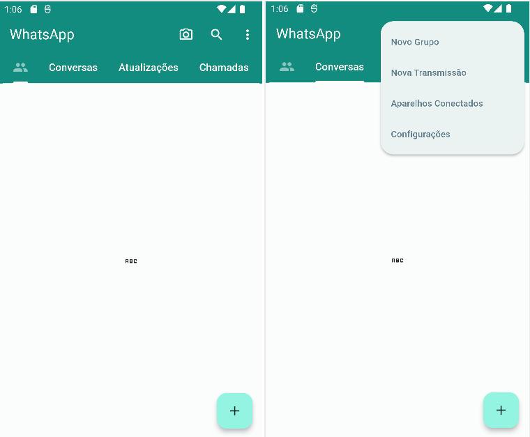

Baixe o PDF do tutorial da etapa inicial aqui.
Ao realizar o passo-a-passo em sala de aula até a interface final, o aluno terá 1,0pt na PROVA MENSAL.
Interface esperada:
Esta etapa depende da conclusão da Etapa 1. Baixe o PDF da continuação do tutorial aqui.
Ao realizar TODAS AS ETAPAS até a interface final, o aluno terá 2,0pts na PROVA MENSAL.
Interface esperada:
O aluno que realizar os exercícios do PDF final (FINAL DOS SLIDES DA ETAPA 2) terá 1,0pt na PROVA MENSAL.